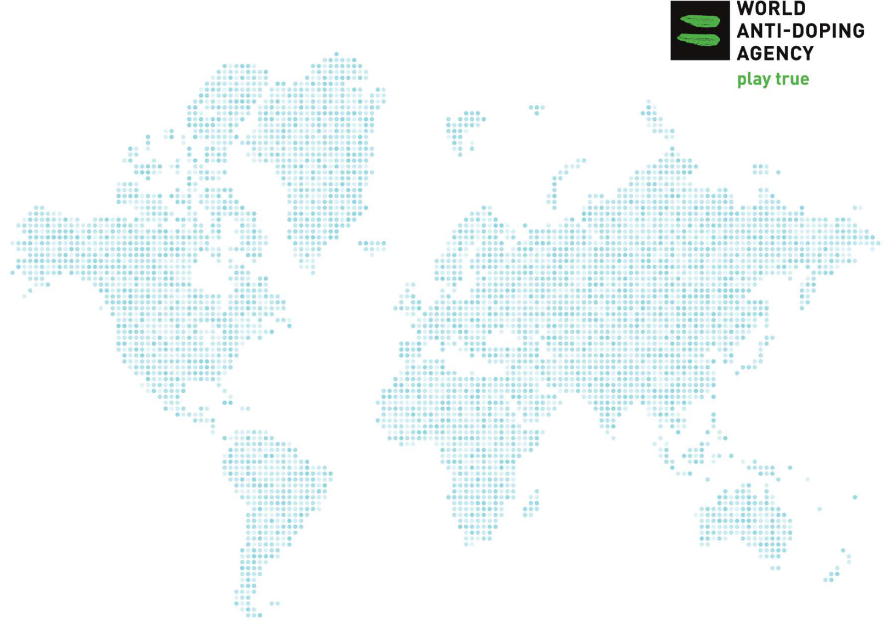

International Standards · ISPPPI
Edition 2021 (November 2021) · effective 24 November 2021 · superseded
Retrieved on 25 November 2026 from https://www.wada-ama.org/sites/default/files/2022-01/international_standard_ispppi_-_november_2021_0.pdf
Editions: 2027 (current) · 2021 (November 2021) · 2018 · 2015 · 2009 · 2009 (annex)
p. 1
International Standard for the Protection of Privacy and Personal Information

p. 2
The World Anti-Doping Code International Standard for the Protection of Privacy and Personal Information is a mandatory International Standard developed as part of the World Anti-Doping Program. It was developed in consultation with Signatories, public authorities, and other relevant stakeholders.
The International Standard for the Protection of Privacy and Personal Information was first adopted in 2009 and came into effect in June 2009. It was subsequently amended two times, the first time effective January 2015 and the second time effective June 2018. A revised version to come into force on 1 January 2021 was approved by the WADA Executive Committee at the World Conference on Doping in Sport in Katowice on 7 November 2019. Following a limited supplementary consultation period, a further revised version was approved by the WADA Executive Committee on 15 September 2020 and is effective as of 1 January 2021.This version incorporates minor, clarifying revisions to Annex A, which were approved by the WADA Executive Committee on 24 November 2021, and has been effective since this date.
Published by:
World Anti-Doping Agency Stock Exchange Tower 800 Place Victoria (Suite 1700) PO Box 120 Montreal, Quebec Canada H4Z 1B7
www.wada-ama.org
Tel: +1 514 904 9232
Fax: +1 514 904 8650
E-mail: code@wada-ama.org
p. 3
p. 4
PART ONE: INTRODUCTION, CODE PROVISIONS, INTERNATIONAL STANDARD PROVISIONS AND DEFINITIONS
1.0 Introduction and Scope
The purpose of the International Standard for the Protection of Privacy and Personal Information is to ensure that Anti-Doping Organizations apply appropriate, sufficient and effective privacy protections to the Personal Information they Process when conducting anti-doping programs, in recognition of the fact that Personal Information gathered in the anti-doping context can impinge upon and implicate the privacy rights of Persons involved in and associated with organized sport.
The Code, in particular, requires Athletes to furnish a significant amount of Personal Information to Anti-Doping Organizations. As a result, it is essential that Anti-Doping Organizations appropriately protect the Personal Information that they Process both to meet legal standards and to ensure the continued confidence and trust of those involved in organized sport.
The Code recognizes and affirms the importance of ensuring that the privacy rights of Persons subject to anti-doping programs based on the Code are fully respected. In support of this commitment, this International Standard sets forth a minimum, common set of rules to which Anti-Doping Organizations must conform when Processing Personal Information pursuant to the Code. In some cases, Anti-Doping Organizations may be required by applicable laws to apply rules or standards that exceed those set forth in this International Standard.
A WADA expert reference group reviewed, discussed and prepared this document, and specifically took into account the Organization for Economic Cooperation and Development's (OECD) 1980 Guidelines on the Protection of Privacy and Transborder Flows of Personal Data; the Council of Europe Convention for the Protection of Individuals with regard to Automatic Processing of Personal Data (ETS. No. 108); the APEC Privacy Framework; the Charter of Fundamental Rights of the European Union, EU Regulation 2016/679 on the protection of natural persons with regard to the processing of personal data (General Data Protection Regulation), and other international and regional data privacy rules, standards and case law, such as the judgement of the European Court of Human Rights of 18 January 2018 (FNASS and others vs. France).
Terms used in this International Standard that are defined terms from the Code are italicized. Terms that are defined in this or another International Standard are underlined.
2.0 Code Provisions
The following articles in the Code are directly relevant to the International Standard for the Protection of Privacy and Personal Information; they can be obtained by referring to the Code itself:
- Code Article 14 Confidentiality and Reporting
p. 5
3.0 Definitions and Interpretation
3.1 Defined Terms from the Code that are used in the International Standard for the Protection of Privacy and Personal Information
ADAMS: The Anti-Doping Administration and Management System is a Web-based database management tool for data entry, storage, sharing, and reporting designed to assist stakeholders and WADA in their anti-doping operations in conjunction with data protection legislation.
Anti-Doping Activities: Anti-doping Education and information, test distribution planning, maintenance of a Registered Testing Pool, managing Athlete Biological Passports, conducting Testing, organizing analysis of Samples, gathering of intelligence and conduct of investigations, processing of TUE applications, Results Management, hearings, monitoring and enforcing compliance with any Consequences imposed, and all other activities related to anti-doping to be carried out by or on behalf of an Anti-Doping Organization, as set out in the Code and/or the International Standards.
Anti-Doping Organization: WADA or a Signatory that is responsible for adopting rules for initiating, implementing or enforcing any part of the Doping Control process. This includes, for example, the International Olympic Committee, the International Paralympic Committee, other Major Event Organizations that conduct Testing at their Events, International Federations, and National Anti-Doping Organizations.
Athlete: Any Person who competes in sport at the international level (as defined by each International Federation) or the national level (as defined by each National Anti-Doping Organization). An Anti-Doping Organization has discretion to apply anti-doping rules to an Athlete who is neither an International-Level Athlete nor a National-Level Athlete, and thus to bring them within the definition of "Athlete". In relation to Athletes who are neither International-Level nor National-Level Athletes, an Anti-Doping Organization may elect to: conduct limited Testing or no Testing at all; analyze Samples for less than the full menu of Prohibited Substances; require limited or no whereabouts information; or not require advance TUEs. However, if an Article 2.1, 2.3 or 2.5 anti-doping rule violation is committed by any Athlete over whom an Anti-Doping Organization has elected to exercise its authority to test and who competes below the international or national level, then the Consequences set forth in the Code must be applied. For purposes of Article 2.8 and Article 2.9 and for purposes of anti-doping information and Education, any Person who participates in sport under the authority of any Signatory, government, or other sports organization accepting the Code is an Athlete.
[Comment to Athlete: Individuals who participate in sport may fall in one of five categories: 1) International-Level Athlete, 2) National-Level Athlete, 3) individuals who are not International or National-Level Athletes but over whom the International Federation or National Anti-Doping Organization has chosen to exercise authority, 4) Recreational Athlete, and 5) individuals over whom no International Federation or National Anti-Doping Organization has, or has chosen to, exercise authority. All International and National-Level Athletes are subject to the anti-doping rules of the Code, with the precise definitions of international and national level sport to be set forth in the anti-doping rules of the International Federations and National Anti-Doping Organizations.]
p. 6
Athlete Support Personnel: Any coach, trainer, manager, agent, team staff, official, medical, paramedical personnel, parent or any other Person working with, treating or assisting an Athlete participating in or preparing for sports competition.
Code: The World Anti-Doping Code.
Competition: A single race, match, game or singular sport contest. For example, a basketball game or the finals of the Olympic 100-meter race in athletics. For stage races and other sport contests where prizes are awarded on a daily or other interim basis the distinction between a Competition and an Event will be as provided in the rules of the applicable International Federation.
Consequences of Anti-Doping Rule Violations ("Consequences"): An Athlete's or other Person's violation of an anti-doping rule may result in one or more of the following: (a) Disqualification means the Athlete's results in a particular Competition or Event are invalidated, with all resulting Consequences including forfeiture of any medals, points and prizes; (b) Ineligibility means the Athlete or other Person is barred on account of an anti-doping rule violation for a specified period of time from participating in any Competition or other activity or funding as provided in Article 10.14.1; (c) Provisional Suspension means the Athlete or other Person is barred temporarily from participating in any Competition or activity prior to the final decision at a hearing conducted under Article 8; (d) Financial Consequences means a financial sanction imposed for an anti-doping rule violation or to recover costs associated with an anti-doping rule violation; and (e) Public Disclosure means the dissemination or distribution of information to the general public or Persons beyond those Persons entitled to earlier notification in accordance with Article 14. Teams in Team Sports may also be subject to Consequences as provided in Article 11.
Delegated Third Parties: Any Person to which an Anti-Doping Organization delegates any aspect of Doping Control or anti-doping Education programs including, but not limited to, third parties or other Anti-Doping Organizations that conduct Sample collection or other Doping Control services or anti-doping Educational programs for the Anti-Doping Organization, or individuals serving as independent contractors who perform Doping Control services for the Anti-Doping Organization (e.g., non-employee Doping Control officers or chaperones).
Doping Control: All steps and processes from test distribution planning through to ultimate disposition of any appeal and the enforcement of Consequences, including all steps and processes in between, including but not limited to, Testing, investigations, whereabouts, TUEs, Sample collection and handling, laboratory analysis, Results Management, hearings and appeals, and investigations or proceedings relating to violations of Article 10.14 (Status During Ineligibility or Provisional Suspension).
Education: The process of learning to instill values and develop behaviors that foster and protect the spirit of sport, and to prevent intentional and unintentional doping.
International Standard: A standard adopted by WADA in support of the Code. Compliance with an International Standard (as opposed to another alternative standard, practice or procedure) shall be sufficient to conclude that the procedures addressed by the International Standard were performed properly. International Standards shall include any Technical
p. 7
Documents issued pursuant to the International Standard.
Participant: Any Athlete or Athlete Support Person.
Person: A natural Person or an organization or other entity.
Prohibited Method: Any method so described on the Prohibited List.
Prohibited Substance: Any substance, or class of substances, so described on the Prohibited List.
Publicly Disclosed: See Consequences of Anti-Doping Rule Violations above.
Results Management: The process encompassing the timeframe between notification as per Article 5 of the International Standard for Results Management, or in certain cases (e.g., Atypical Finding, Athlete Biological Passport, Whereabouts Failure), such pre-notification steps expressly provided for in Article 5 of the International Standard for Results Management, through the charge until the final resolution of the matter, including the end of the hearing process at first instance or on appeal (if an appeal was lodged).
Sample or Specimen: Any biological material collected for the purposes of Doping Control.
[Comment to Sample or Specimen: It has sometimes been claimed that the collection of blood Samples violates the tenets of certain religious or cultural groups. It has been determined that there is no basis for any such claim.]
Signatories: Those entities accepting the Code and agreeing to implement the Code, as provided in Article 23.
Target Testing: Selection of specific Athletes for Testing based on criteria set forth in the International Standard for Testing and Investigations.
Testing: The parts of the Doping Control process involving test distribution planning, Sample collection, Sample handling, and Sample transport to the laboratory.
Therapeutic Use Exemption [TUE]: A Therapeutic Use Exemption allows an Athlete with a medical condition to use a Prohibited Substance or Prohibited Method, but only if the conditions set out in Article 4.4 and the International Standard for Therapeutic Use Exemptions are met.
WADA: The World Anti-Doping Agency.
3.2 Defined Terms from the International Standard for Testing and Investigations
Doping Control Coordinator: An Anti-Doping Organization or a Delegated Third Party that coordinates any aspect of Doping Control on behalf of an Anti-Doping Organization. The Anti-Doping Organization always remains ultimately responsible under the Code for compliance with the requirements of the International Standard for Testing and Investigations, Therapeutic Use Exemptions, Protection of Privacy and Personal Information, and Results Management.
p. 8
Doping Control Officer (or DCO): An official who has been trained and authorized by the Sample Collection Authority to carry out the responsibilities given to DCOs in the International Standard for Testing and Investigations.
No Advance Notice Testing: Sample collection that takes place with no advance warning to the Athlete and where the Athlete is continuously chaperoned from the moment of notification through Sample provision.
3.3 Defined Terms Specific to the International Standard for the Protection of Privacy and Personal Information
Personal Information: Information, including without limitation Sensitive Personal Information, relating to an identified or identifiable Participant or other Person whose information is Processed solely in the context of an Anti-Doping Organization's Anti-Doping Activities.
[Comment to Personal Information: It is understood that Personal Information includes, but is not limited to, information relating to an Athlete's name, date of birth, contact details and sporting affiliations, whereabouts, designated TUEs (if any), anti-doping test results, and Results Management (including disciplinary hearings, appeals and sanctions). Personal Information also includes personal details and contact information relating to other Persons, such as medical professionals and other Persons working with, treating or assisting an Athlete in the context of Anti-Doping Activities. Such information remains Personal Information and is regulated by this International Standard for the entire duration of its Processing, irrespective of whether the relevant individual remains involved in organized sport.]
Processing (and its cognates, Process and Processed): Collecting, accessing, retaining, storing, disclosing, transferring, transmitting, amending, deleting or otherwise making use of Personal Information.
Security Breach: A breach of security resulting in the loss, theft, damage or unauthorized and/or unlawful Processing of Personal Information whether in electronic or hard-copy or other form, or interference with an information system, that compromises the privacy, security, confidentiality, availability or integrity of Personal Information.
Sensitive Personal Information: Personal Information relating to a Participant's racial or ethnic origin, commission of offences (criminal or otherwise), health (including information derived from analyzing an Athlete's Samples or Specimens) and biometric and genetic information.
Third Party: Any Person other than the Person to whom the relevant Personal Information relates, Anti-Doping Organizations, and Third-Party Agents.
Third-Party Agent: Any Person that Processes Personal Information on behalf of, as delegated by, or as otherwise engaged by an Anti-Doping Organization in the context of the Anti-Doping Organization's own Anti-Doping Activities including, without limitation, a Delegated Third Party and any subcontractors.
p. 9
3.4 Interpretation
3.4.1 The official text of the International Standard for the Protection of Privacy and Personal Information shall be published in English and French. In the event of any conflict between the English and French versions, the English version shall prevail.
3.4.2 Like the Code, the International Standard for the Protection of Privacy and Personal Information has been drafted giving consideration to the principles of proportionality, human rights, and other applicable legal principles. It shall be interpreted and applied in that light.
3.4.3 The comments annotating various provisions of the International Standard for the Protection of Privacy and Personal Information shall be used to guide its interpretation.
3.4.4 Unless otherwise specified, references to Sections and Articles are references to Sections and Articles of the International Standard for the Protection of Privacy and Personal Information.
3.4.5 The Annexes to the International Standard for the Protection of Privacy and Personal Information have the same mandatory status as the rest of the International Standard.
p. 10
PART TWO: STANDARDS FOR HANDLING PERSONAL INFORMATION
4.0 Processing Personal Information in Accordance with International Standard and Applicable Law
4.1 This International Standard sets forth a minimum set of requirements applicable to the Processing of Personal Information by Anti-Doping Organizations and their Third-Party Agents in the context of their Anti-Doping Activities. All Anti-Doping Organizations must comply with this International Standard, even when its requirements exceed those arising under the Anti-Doping Organization's applicable data protection and/or privacy laws, reflecting the vital need to protect the privacy of Participants and other Persons involved in and associated with anti-doping in sport.
[Comment to 4.1: Anti-Doping Organizations, along with any Third-Party Agents, minimally must comply with the requirements set forth in this International Standard, as applicable, provided that such compliance does not breach other applicable laws. For greater certainty, in cases where compliance with the requirements of this International Standard may cause an Anti-Doping Organization to breach other applicable laws, those laws shall prevail. This result will not lead to a determination of non-compliance with the World Anti-Doping Code to the strict extent of the conflict, however, Anti-Doping Organizations should communicate any such conflicts to WADA and other relevant Anti-Doping Organizations as soon as reasonably possible.]
4.2 Anti-Doping Organizations may be subject to data protection and privacy laws that impose requirements that exceed those arising under this International Standard. In such circumstances, Anti-Doping Organizations must ensure that their Processing of Personal Information complies with all such data protection and privacy laws.
[Comment to 4.2: Anti-Doping Organizations in certain countries may be subject to laws that govern their Processing of Personal Information relating to natural Persons in addition to Participants, such as their own employees or staff employed by other Anti-Doping Organizations, or impose additional restrictions going beyond this International Standard. In all such cases, Anti-Doping Organizations are expected to comply with applicable privacy and data protection laws.]
4.3 Anti-Doping Organizations shall be able to demonstrate that their Processing of Personal Information takes place in accordance with this International Standard, in particular through the adoption of appropriate internal policies and procedures reflecting their adherence to this International Standard.
[Comment to 4.3: Anti-Doping Organizations can only effectively adhere to the requirements of this International Standard by having in place documented internal policies, procedures and information governance standards relating to Personal Information.]
4.4 Anti-Doping Organizations shall maintain a record of the Processing of Personal Information for which they are responsible, which shall describe the general purposes of the Processing, a description of the types of Personal Information, the categories of potential recipients of the Personal Information, the safeguards used where Personal Information is disclosed to other Anti-Doping Organizations, Third Parties, or Third-Party Agents, the period for which the
p. 11
Personal Information will be stored, or the criteria used to determine this period, and a general description of the technical and organizational security measures applied to the Personal Information.
[Comment to 4.4: Anti-Doping Organizations must maintain a record of their Processing activities, to better ensure their effective oversight of these activities and to facilitate compliance with this International Standard. With respect to the ADAMS database administered by WADA, WADA shall be solely responsible for maintaining a record reflecting the types of Processing of Personal Information that occur within the database.]
4.5 Anti-Doping Organizations shall designate a Person who is accountable for compliance with this International Standard and all locally applicable privacy and data protection laws. They shall ensure that the contact information of the Person so designated is made readily available to Participants in accordance with Article 7.
5.0 Processing Relevant and Proportionate Personal Information
5.1 Anti-Doping Organizations shall only Process Personal Information where relevant and proportionate in order to conduct Anti-Doping Activities under the Code and International Standards, provided such Processing does not conflict with applicable privacy and data protection laws, or where otherwise required by applicable law, regulation or compulsory legal process.
5.2 Anti-Doping Organizations shall not Process Personal Information that is irrelevant or unnecessary in the context of their Anti-Doping Activities as identified in Article 5.1.
[Comment to 5.2: Anti-Doping Organizations shall examine the different contexts in which they Process Personal Information to ensure that the Processing of the Personal Information in any given case is required in order to satisfy one of the purposes identified in Article 5.1. Where Anti-Doping Organizations cannot satisfy themselves that the Processing is necessary, they shall refrain from Processing the Personal Information.]
5.3 In particular, except as otherwise expressly required by law:
a) Anti-Doping Organizations Processing Personal Information (which may involve Processing Sensitive Personal Information relating to Athletes and Processing non-Sensitive Personal Information relating to Participants and potentially other Persons) in order to determine whether an Athlete's use of a Prohibited Substance or Prohibited Method is consistent with the provisions of a TUE, shall Process only the Personal Information proportionate and relevant for making this determination in accordance with the Code and/or the International Standard for Therapeutic Use Exemptions.
b) Anti-Doping Organizations Processing Personal Information relating to Participants and other Persons in order to perform Testing, shall Process only the Personal Information (including whereabouts information and TUEs) proportionate and relevant for conducting Testing (e.g., test distribution planning, Sample collection, Sample handling, Sample transport to the laboratory or associated matters) in accordance with the Code and/or the International Standard for Testing and Investigations.
p. 12
c) Anti-Doping Organizations Processing Personal Information relating to Participants and other Persons in order to engage in investigations and Results Management (including associated disciplinary hearings, appeals and adjudications) shall Process only the Personal Information, including but not limited to whereabouts information, TUEs, test results, and non-analytical intelligence or information, proportionate and relevant for investigating and establishing one or more anti-doping rule violations in accordance with the Code and/or the International Standard for Results Management and the International Standard for Testing and Investigations.
d) Anti-Doping Organizations may Process Personal Information relating to Participants and other Persons for other specified purposes, provided that those purposes relate exclusively to the fight against doping and are found to be relevant to that fight following an appropriately documented assessment performed by the Anti-Doping Organization.
[Comment to 5.3.d.: In certain contexts, it may be appropriate or necessary for Anti-Doping Organizations to Process Personal Information for additional purposes, besides those identified as Anti-Doping Activities or expressly required by law, in order to engage effectively in the fight against doping. Such Processing must be exclusively linked to the fight against doping and may only occur where the Anti-Doping Organization has documented the need to perform such Processing. The general limitations set out in 5.1 and 5.2 continue to apply to any Processing of Personal Information for such purposes.]
5.4 Personal Information Processed by Anti-Doping Organizations shall be Processed fairly and shall be accurate, complete and kept up to date. Anti-Doping Organizations shall correct or amend as soon as possible any Personal Information that they know to be incorrect or inaccurate, taking into account the responsibilities of Participants to provide accurate and upto-date information regarding themselves to Anti-Doping Organizations, including in the context of the provision of whereabouts information.
[Comment to 5.4: Where Participants are responsible for providing Personal Information about themselves directly to Anti-Doping Organizations and for keeping it accurate, complete and upto-date, they should be informed of this obligation and, whenever practicable, offered reasonable means to fulfill it. For instance, this could involve furnishing individuals with access to their Personal Information via the Internet through online tools and resources.]
6.0 Processing Personal Information in Accordance with a Valid Legal Ground
6.1 Anti-Doping Organizations shall only Process Personal Information in accordance with a valid legal ground, which can include:
a) Compliance with legal obligations, performance of a public interest task, where necessary for reasons of substantial public interest, public health, or fulfillment of a contract, or to protect the vital interests of the Participant and other Persons; or
b) Where permitted, consent of a Participant or other Person, which shall be informed, freely given, specific and unambiguous, subject to the exceptions in Article 6.2.b, 6.3 and 6.4 of this International Standard.
[Comment to 6.1: Principal responsibility for obtaining the consent of an Athlete, and/or his or her associated Athlete Support Personnel, or establishing another valid legal ground, shall rest with the Anti-Doping Organization(s) that has the then-primary relationship with the relevant Participant.]
p. 13
6.2 Where Anti-Doping Organizations Process Personal Information on the basis of consent (including sharing Personal Information with WADA), Anti-Doping Organizations shall, in order to obtain an informed, specific and unambiguous consent, ensure that adequate information is furnished to the Participant or Person to whom the Personal Information relates as described more fully in Article 7.
a) Anti-Doping Organizations shall inform Participants of the negative Consequences that could arise from their refusal to participate in Doping Controls, including Testing, and of the refusal to consent to the Processing of Personal Information as required for this purpose.
[Comment to 6.2.a: For the avoidance of doubt, Participants shall be informed that their refusal to participate in Doping Controls, when requested to do so, could prevent their continued involvement in organized sport and, for Athletes, constitute a violation of the Code and invalidate Competition results, among other things. A Participant who believes that an Anti-Doping Organization does not comply with this International Standard may notify WADA pursuant to Article 11.5, which shall, without prejudice to any other rights the Participant may have under applicable law, consider the grounds for the complaint.]
b) Where Anti-Doping Organizations Process Personal Information on the basis of consent (including sharing Personal Information with WADA), Anti-Doping Organizations shall inform Participants that regardless of any refusal to grant or subsequent withdrawal of consent, the Processing of their Personal Information by Anti-Doping Organizations still may be required, unless otherwise prohibited by applicable law, where necessary to enable Anti-Doping Organizations:
a) To commence or pursue analyses or investigations involving suspected anti-doping rule violations relating to the Participant;
b) To conduct or participate in proceedings involving suspected anti-doping rule violations relating to the Participant; or
c) To establish, exercise or defend against legal claims relating to an Anti-Doping Organization and/or the Participant.
[Comment to 6.2.b.: In certain limited circumstances, Anti-Doping Organizations must have the ability to Process Personal Information in the absence of the Participant's consent. These exceptions are necessary to avoid situations where Participants refuse to grant consent or withdraw consent in order to circumvent anti-doping efforts and procedures and evade detection for a doping violation.]
6.3 Where Anti-Doping Organizations Process Sensitive Personal Information on the basis of consent (including sharing Sensitive Personal Information with WADA), the explicit consent of the Participant or Person to whom the Personal Information relates shall be obtained. The Processing of Sensitive Personal Information shall occur in accordance with any specific safeguards or procedures established under applicable privacy and data protection laws.
p. 14
[Comment to 6.3: This International Standard imposes additional restrictions where Anti-Doping Organizations Process Sensitive Personal Information, reflecting the greater sensitivities surrounding the Processing of such information. Specifically, explicit consent requires a positive, explicit action agreeing to the relevant Processing by the Person to whom the Personal Information relates. Although the International Standard defines Sensitive Personal Information to expressly include different classes of information, this is not to suggest that such information should be Processed by Anti-Doping Organizations, as required by Article 5.1.]
6.4 In cases where a Participant is incapable of furnishing an informed consent by virtue of age, mental capacity or other legitimate reason recognized in law, the Participant's legal representative, guardian or other competent representative may furnish consent on the Participant's behalf for purposes of this International Standard, as well as exercise the Participant's rights arising under Article 11 below. Anti- Doping Organizations shall ensure that obtaining consents under such circumstances is permitted by applicable law.
7.0 Ensuring Appropriate Information is Furnished to Participants and Other Persons
7.1 An Anti-Doping Organization shall inform Participants or Persons to whom the Personal Information relates about the Processing of their Personal Information. This information shall include:
a) The identity of the Anti-Doping Organization collecting the Personal Information and contact details of the Person appointed pursuant to Section 4.5;
b) Types of Personal Information that may be Processed;
c) The purposes for which the Personal Information may be used;
d) Categories of potential recipients of the Personal Information, including Anti-Doping Organizations (such as WADA), Third Parties and Third-Party Agents who may be located in other countries where the Participant may compete, train or travel;
e) The possibility and circumstances under which Personal Information may, where permitted by applicable law, be *Publicly Disclosed (*such as the disclosure of test results and tribunal decisions);
f) The Participant's rights with respect to the Personal Information under this International Standard and the means to exercise those rights;
g) The procedure for submitting complaints pursuant to Article 11.5 and the possibility, if any, to submit complaints to competent data protection authorities;
h) The period for which the Personal Information will be stored, or the criteria used to determine this period; and
i) Any other information necessary to ensure that the Processing of Personal Information remains fair, such as information about regulatory authorities or bodies that oversee the Anti-Doping Organization's Processing of Personal Information.
p. 15
7.2 Anti-Doping Organizations shall communicate the above information to Participants or other Persons prior to or at the time that they collect Personal Information from Participants or other Persons in the form and manner specified in Article 7.3; and Anti-Doping Organizations shall be responsive to the questions or concerns of Participants relating to the Processing of their Personal Information by the Anti-Doping Organization. Where Anti-Doping Organizations receive Personal Information from third parties, and not directly from the Participant, they shall communicate the above information as soon as possible and without undue delay, unless it has previously been furnished to the Participant or other Person by other parties. Exceptionally, notice to the Participant or other Persons may be delayed or suspended where providing such notice might reasonably be considered to jeopardize an anti-doping investigation or otherwise undermine the integrity of the anti-doping process. In such cases, the justification for the delay must be appropriately documented and the information provided to the Participant or other Persons as soon as reasonably possible.
[Comment to 7.2: Anti-Doping Organizations should recognize that basic principles of fairness require that where a Participant's Personal Information is Processed in the context of Anti-Doping Activities, he or she should receive or have access to information that explains in simple terms the purpose and procedures for the Processing of their Personal Information. This International Standard aspires to ensure that Participants acquire a basic grasp of the roles and responsibilities performed by the different organizations involved in anti-doping in sport, as those relate to the Processing of Personal Information. Under no circumstances should Anti-Doping Organizations seek to mislead or misinform Participants in order to Process their Personal Information. In addition to furnishing such information directly to Participants or other Persons, Anti-Doping Organizations may wish to make such information available on any websites or other online platforms that they operate.
Each Anti-Doping Organization should ensure that its Processing of Personal Information is transparent to Participants, notwithstanding the fact that certain information relating to Anti-Doping Activities, notably information concerning scheduled Testing and investigations and proceedings relating to anti-doping rule violations, may need to be temporarily withheld from Participants in order to maintain the integrity of the anti-doping process. Similarly, notice to Participants also may need to be temporarily withheld if providing the information might reasonably risk jeopardizing an ongoing or reasonably anticipated investigation into doping-related activities conducted by an Anti-Doping Organization or law enforcement agencies. The prompt provision of appropriate information to Participants pursuant to this Article 7 is essential given the serious adverse Consequences that might arise if Participants are found to have committed an anti-doping rule violation.]
7.3 Anti-Doping Organizations shall provide the above information in a manner and format, whether written, oral or otherwise, that Participants or Persons to whom the Personal Information relates can easily comprehend, using clear and plain language. Anti-Doping Organizations shall take into account the age and mental capacity of the Participant or other Person, as well as local practices, customs and the particular circumstances surrounding the Processing of the Personal Information.
[Comment to 7.3: Anti-Doping Organizations need to determine the most effective means of providing information in particular cases, recognizing that furnishing Participants with written notice is to be preferred when practical. This also may include furnishing notices through generally available sources, such as brochures and Internet websites, alone or preferably in combination with more succinct notices on forms and other documentation provided directly to Participants. Anti-Doping Organizations also must take into account the specific circumstances of the Participant or other Person, in particular factors such as their age or mental capacity that impact their ability to understand the information being presented to them by the Anti-Doping Organization.]
p. 16
8.0 Disclosures of Personal Information to other Anti-Doping Organizations and Third Parties
8.1 Anti-Doping Organizations shall not disclose Personal Information to other Anti-Doping Organizations except where such disclosures are necessary to allow the Anti-Doping Organizations receiving the Personal Information to fulfill obligations under the Code and the International Standards and in accordance with applicable privacy and data protection laws.
[Comment to 8.1: In many instances required by the Code and the International Standards, it is necessary for Anti-Doping Organizations to share certain Personal Information relating to Participants with other Anti-Doping Organizations so that they may engage in Code-mandated Testing or otherwise fulfill their respective roles under the Code/International Standards. For instance, this may occur in order to subject Athletes to In-Competition and Out-of-Competition Testing. In such cases, Anti-Doping Organizations shall cooperate with one another to ensure that the participation by Participants in such Testing remains suitably transparent to Participants and complies with the rules set out in this International Standard and applicable laws.]
8.2 Anti-Doping Organizations shall not disclose Personal Information to other Anti-Doping Organizations: (i) where the recipient Anti-Doping Organizations cannot establish a right, authority or need to obtain the Personal Information; (ii) where there is evidence that the recipient Anti-Doping Organizations do not or cannot comply with this International Standard; (iii) where the Anti-Doping Organization is prohibited from disclosing the Personal Information by applicable law or restrictions imposed by a competent supervisory authority; or (iv) where the disclosure would seriously compromise the status of an ongoing investigation into anti-doping rule violations. Where an Anti-Doping Organization has concerns that another Anti-Doping Organization is incapable of complying with this International Standard, it shall make its concerns known to the Anti-Doping Organization and WADA as soon as possible.
8.3 Apart from the disclosures referenced in Sections 8.1 and 8.2 above, Anti-Doping Organizations may disclose Personal Information to Third Parties where such disclosures:
a) Are required by law, regulation or compulsory legal process;
b) Take place with the informed, express consent of the relevant Participant; or
c) Are necessary to assist law enforcement or governmental or other authorities in the detection, investigation or prosecution of a criminal offence, breach of professional conduct rules, or breach of the Code; provided that the Personal Information is reasonably relevant to the offence or breach in question and cannot otherwise reasonably be obtained by the relevant authorities.
[Comment to 8.3.c.: The ability of an Anti-Doping Organization to cooperate and exchange Personal Information with law enforcement agencies and other authorities and the manner by which this is to occur may depend upon applicable national laws and regulations. Such rules may sometimes require or encourage Anti-Doping Organizations to disclose Personal Information to law enforcement and other authorities when they are aware that this information may be relevant to an investigation. Anti-Doping Organizations must comply with such national obligations where they exist.]
p. 17
9.0 Maintaining the Security of Personal Information
9.1 Anti-Doping Organizations shall protect Personal Information that they Process by applying all necessary security safeguards, including physical, organizational, technical, environmental and other measures, to prevent a Security Breach.
[Comment to 9.1: Anti-Doping Organizations shall ensure that any access to Personal Information by their own personnel shall take place on a need-to-know basis only and where consistent with assigned roles and responsibilities. Personnel accessing Personal Information should be informed of the need to hold Personal Information in confidence.]
9.2 Anti-Doping Organizations shall apply security measures that take into account the sensitivity of the Personal Information being Processed. Anti-Doping Organizations shall apply a higher level of security to the Sensitive Personal Information that they Process, reflecting the correspondingly greater risk that a Security Breach involving such information presents to the Participant or Person to whom the Personal Information relates.
9.3 Anti-Doping Organizations sharing Personal Information with Third-Party Agents in connection with their Anti-Doping Activities shall ensure that such Third-Party Agents are subject to appropriate controls, including contractual and technical controls, in order to protect the confidentiality and privacy of the Personal Information and to ensure that the Personal Information is only Processed on behalf of the Anti-Doping Organization or within the scope of the delegation or engagement of such Third-Party Agent, as the case may be.
[Comment to 9.3: Anti-Doping Organizations have an ongoing responsibility to protect any Personal Information under their effective control or in their possession, including Personal Information Processed by their Third-Party Agents, such as IT-service providers, laboratories, external experts, Delegated Third Parties, Doping Control Coordinators, and external Doping Control Officers. Anti-Doping Organizations shall apply contractual controls that can include, as appropriate, provisions to ensure Third-Party Agents only Process Personal Information on the documented instructions of the Anti-Doping Organization, subject any Third-Party Agent or its staff handling Personal Information to a duty of confidentiality, apply appropriate technical security measures and organizational measures to the Personal Information, refrain from engaging other parties to Process the Personal Information without prior authorization and appropriate contractual controls being in place, require assistance where Participants or other Persons assert rights under this International Standard or applicable law, delete or return all Personal Information at the conclusion of the service or upon request, and make information available to the Anti-Doping Organization to demonstrate compliance with such controls. Anti-Doping Organizations shall consider technical controls where Third-Party Agents are granted access to their systems that include, inter alia, access restrictions and authentication requirements.]
9.4 Anti-Doping Organizations are required to choose Third-Party Agents that provide sufficient p. 18 guarantees, in accordance with applicable law and this International Standard, in respect of the technical security measures and organizational measures governing the Processing to be carried out.
9.5 In the event of a Security Breach, the responsible Anti-Doping Organization shall inform affected Participants or other natural Persons of the breach, where this breach is likely to affect in a significant way the rights and interests of those Persons concerned. The information must be provided as soon as reasonably possible once the Anti-Doping Organization becomes aware of the details of the Security Breach and should describe the nature of the breach, the possible negative consequences for those Persons concerned and the remediation measures taken or to be taken by the Anti-Doping Organization. Additionally, the Anti-Doping Organization shall ensure that the Person appointed pursuant to Section 4.5 is also informed about the Security Breach. The Anti-Doping Organization shall keep a record of Security Breaches, including the facts relating to the breach, its effects and remedial actions taken.
[Comment to 9.5: Security Breach notification obligations are becoming increasingly common throughout the world. Pursuant to Article 4 of this International Standard, Anti-Doping Organizations must comply with national obligations that go beyond the International Standard (i.e., some national regimes may require additional notification to a competent authority or other organizations or impose specific timeframes for notification). A breach does not significantly affect an individual when the Personal Information in question is subject to suitable technological protection measures (e.g., encryption) and there is no indication that the protection has been compromised. Notice shall be given by any appropriate means, whether written, verbally or otherwise, taking into account the particular circumstances of the Security Breach, including the prejudice that the relevant Persons may suffer as a result of the Security Breach.]
9.6 Anti-Doping Organizations shall regularly assess their Processing of Sensitive Personal Information and whereabouts information to determine the proportionality and risks of their Processing and to assess any measures, including privacy by design measures, that could be taken to reduce the risks for the Participants concerned.
[Comment to 9.6: The requirement to conduct assessments of the Processing of Sensitive Personal Information and whereabouts information on a regular basis is intended to provide Anti-Doping Organizations flexibility to conduct such assessments at an appropriate frequency reflecting applicable privacy and data protection laws, and any changes to such Processing. For instance, Anti-Doping Organizations have the discretion under the International Standard for Testing and Investigations to collect varying types and amounts of whereabouts information from different tiers of Athletes. The establishment of appropriate types and amounts of whereabouts information, as well as any changes to such requirements may require an assessment].
9.7 Anti-Doping Organizations shall ensure that any staff Processing Personal Information of Participants is subject to a fully enforceable contractual and/or statutory duty of confidentiality.
10.0 Retaining Personal Information Where Relevant and Ensuring Its Destruction
10.1 Anti-Doping Organizations shall adhere to those retention times set forth in the latest version of Annex A - Retention Times attached hereto. Anti-Doping Organizations shall retain any
p. 19
Personal Information for which no retention time has been set in Annex A in accordance with the following principles, and where possible, shall establish clear retention times to govern their Processing of Personal Information consistent with such principles.
[Comment to 10.1: WADA shall be solely responsible for implementing the retention times set forth in Annex A within the ADAMS database administered by WADA.]
10.2 As a general rule, retaining Sensitive Personal Information requires stronger or more compelling reasons and justifications than retaining non-Sensitive Personal Information.
10.3 Anti-Doping Organizations shall ensure that Personal Information is only retained where it remains relevant to fulfilling their obligations under the Code or under the International Standards or where otherwise required by applicable law, regulation or compulsory legal process. Once Personal Information no longer serves the above purposes, it shall be deleted, destroyed or permanently anonymized.
10.4 Anti-Doping Organizations shall develop specific plans and procedures to ensure the secure retention and eventual destruction of Personal Information.
10.5 Different retention times may be applied to different types of Personal Information and shall take into account the purposes for which the Personal Information is Processed in the context of Anti-Doping Activities, including the granting of TUEs, Testing, the investigation of anti-doping rule violations, and the sanctioning of such violations.
11.0 Rights of Participants and Other Persons with Respect to Personal Information
11.1 Participants or Persons to whom the Personal Information relates shall have the right to obtain from Anti-Doping Organizations: (a) confirmation of whether or not Anti-Doping Organizations Process Personal Information relating to them, (b) the information as per Article 7.1, and (c) a copy of the relevant Personal Information within one (1) month, where practicable, or as soon as possible thereafter, in a readily intelligible format, and without excessive cost, subject to limited exceptions prescribed by law or unless to do so in a particular case plainly conflicts with the integrity of the anti-doping system or an Anti-Doping Organization's ability to plan or conduct No Advance Notice Testing or to investigate and establish anti-doping rule violations or other legal claims.
[Comment to 11.1: Participants or other Persons may also have additional rights under applicable privacy and data protection laws, and Anti-Doping Organizations shall follow the process set out herein when responding to requests in respect of such additional rights, as applicable. Principal responsibility for receiving and responding to requests from Participants or other Persons shall rest with the Anti-Doping Organization(s) that has the then-primary relationship with the relevant Participant/Person. To the extent it receives any such requests, WADA will respond in coordination with the relevant Anti-Doping Organization. Save in exceptional circumstances, (which may include situations where the amount of Personal Information at issue is significant and involves a disproportionate effort to assemble), an Anti-Doping Organization ordinarily is expected to respond no later than four (4) weeks from the date a properly formulated request is received. Anti-Doping Organizations shall be entitled to request additional information and clarifications from Participants or Persons in order to be
p. 20
- able to respond to their request, including, where appropriate, additional information to confirm the identity of the Participant or Person making the request.]
11.2 Anti-Doping Organizations have to respond to requests from Participants or Persons to whom the Personal Information relates seeking access to their Personal Information, except if doing so imposes a disproportionate burden on the Anti-Doping Organizations in terms of cost or effort given the nature of the Personal Information in question.
11.3 In the event an Anti-Doping Organization refuses to allow a Participant or Person access to his or her Personal Information, it shall inform the Participant/Person and set out in writing the reasons for refusing the request as soon as practicable. Anti-Doping Organizations shall ensure that Participants/Persons only obtain Personal Information relating to themselves, and not relating to other Participants or third Persons, where they seek to obtain access to Personal Information pursuant to this Article 11.
11.4 Where an Anti-Doping Organization's Processing of Personal Information is shown to be inaccurate, incomplete, or excessive, it shall, as appropriate, rectify, amend, block or delete the relevant Personal Information as soon as possible. If the Anti-Doping Organization has disclosed the Personal Information in question to another Anti-Doping Organization that to its knowledge or belief continues to Process the Personal Information, it shall inform that Anti-Doping Organization of the change as soon as possible, unless this proves impossible or involves a disproportionate effort. The Anti-Doping Organization shall inform the Participant or Person about these Anti-Doping Organizations where they request the information.
11.5 Without prejudice to any other rights a Participant or Person may have under applicable laws, a Participant or Person shall be entitled to initiate a complaint with an Anti-Doping Organization where he or she has a reasonable, good-faith belief that an Anti-Doping Organization is not complying with this International Standard and each Anti-Doping Organization shall have a documented procedure in place for dealing with such complaints in a fair and impartial manner. In the event that the complaint cannot be satisfactorily resolved, the Participant or Person may notify WADA, which will handle the complaint in accordance with the International Standard for Code Compliance by Signatories. Where the International Standard for the Protection of Privacy and Personal Information is not being adhered to, the relevant Anti-Doping Organization will be required to resolve the non-conformity in accordance with the International Standard for Code Compliance by Signatories. Nothing in this International Standard prevents a Participant or Person from lodging a complaint with any competent authority responsible for the protection of privacy and personal information, and Anti-Doping Organizations shall cooperate with such authorities when investigating the complaint.
p. 21
ANNEX A: RETENTION TIMES
ADRV: Anti-doping rule violation
AAF: Adverse analytical finding
ATF: Atypical finding
ATPF: Atypical passport finding
I. Referenced data will be deleted no later than the end of the calendar quarter following the expiry of the stated retention period.
II. Retention times are limited to two categories: Twelve (12) months and ten (10) years. The period of ten (10) years represents the time period during which an action may be commenced for an anti-doping violation under the Code. The period of twelve (12) months represents the time period relevant to count three (3) whereabouts failures giving rise to an anti-doping rule violation, and is also applied to certain incomplete documentation and TUE-related information.
III. Retention times can be extended in case of pending or reasonably anticipated anti-doping rule violations, investigations, or other legal proceedings.
| Module | Data | Retention Periods | Remarks | Criteria |
|---|---|---|---|---|
| 1 - Athlete Athlete (general) | Name, Date of birth, Sport Discipline and Gender Contact information (phone number (s), email address, mailing address) | : 10 yrs as of time when Athlete is excluded from ADO's Testing program or as of time other data categories have been deleted (see, e.g. Section 6 - ADRV), whichever is later 10 yrs as of time when Athlete is excluded from ADO's Testing program | Athlete data relevant for practical purposes and for notification purposes in the event of an ADRV. These data are not particularly sensitive. Necessary to notify of ADRV and to keep a record of Athletes included in an ADO's Testing program. Same as above. | Necessity Necessity |
p. 22
| Module | Data | Retention Periods | Remarks | Criteria |
|---|---|---|---|---|
| 2 - Whereabouts* *(except for city, country, and In- Competition whereabouts information, which are needed for the Athlete Biological Passport- see section 7) Whereabouts | Whereabouts (other than city, country and In-Competition whereabouts) Whereabouts failures (filing failures and missed tests) | 12 months as of end of the whereabouts quarter for which the data was submitted 10 years as of date of whereabouts failure | Relevant to count 3 whereabouts failures in 12 months' time. Relevant to count 3 whereabouts failures in 12 months' time and to other possible ADRVs. If ADRV, will also be kept as part of results management file (see section 6). | Necessity Necessity |
| 3 - TUEs TUE | TUE certificates and rejected TUE decision forms TUE application forms and supp. med information and any other TUE info not otherwise expressly mentioned herein. Incomplete TUEs | 10 yrs as of date of TUE expiry/date of rejection decision 12 months from date of TUE expiry 12 months from date of creation | Destroying medical information makes it impossible for WADA/ADOs to review TUEs retrospectively after TUE has lost its validity. TUE information is largely medical and therefore sensitive. Can be relevant in case of re-Testing or other investigations. Loses relevance after expiration of TUE except in case of re- application. Can be relevant in case of re-application. | Proportionality/ Necessity Proportionality/Necessity Proportionality |
p. 23
| Module | Data | Retention Periods | Remarks | Criteria |
|---|---|---|---|---|
| 4 - Testing Testing | Doping Control Forms (DCFs) Mission/Testing orders Chain of custody Incomplete Testing documentation or documentation not matched to a Sample | 10 yrs as of Sample collection date Retained until all associated DCFs have been deleted 10 yrs as of document creation date 12 months as of document creation date | DCFs, associated mission/Testing orders, and chain of custody documents are relevant for Athlete Biological Passport and in case of re-Testing of Samples. If ADRV, will also be kept as part of results management file (see section 6). Same as above. Same as above. Documentation that is incomplete or not matched to a Sample typically results from a data entry error and is discarded after a short delay for data integrity purposes. | Proportionality/Necessity Proportionality/Necessity Proportionality/Necessity Proportionality |
| 5 - Test results/Results Management | Analytical test results (incl. AAF/ATF), laboratory reports, and other associated documentation | As of Sample collection date / date of creation of relevant documents: 10 yrs* | Necessary because of multiple violations and retrospective analysis. If ADRV, will also be kept as part of results management file (see section 6). *Subject to the criteria and requirements of the Code/International Standards, analytical data resulting from Sample analysis and other Doping Control information may, in certain circumstances, be kept beyond the applicable retention period for research and other purposes permitted by Article 6.3 of the Code. Samples and data must be processed to ensure they cannot be traced back to an athlete before being used for such secondary purposes. 10 years is the maximum retention time for identifiable data and Samples. See the International Standard for Laboratories for details. | Necessity Proportionality/Necessity |
p. 24
| Module | Data | Retention Periods | Remarks | Criteria |
|---|---|---|---|---|
| 6 -Proceedings and Decisions (ADRV) | As of date of final decision: | Managed by disciplinary body / sports federation / ADO. | ||
| Decisions and proceedings | Sanctions and Decisions under the Code | Longer of 10 yrs or duration of sanction* | Necessary because of multiple violations and possible duration of sanctions. * Decisions (e.g. CAS decisions) can be important legal precedents and part of the public record; in such cases, ADOs may decide to retain a decision beyond the applicable retention period. | Necessity Proportionality/Necessity |
| Relevant documentation/files (incl. AAF or whereabouts failure record, case files, laboratory and ABP documentation packages, etc.) | Longer of 10 yrs or duration of sanction | Necessary because of multiple violations and possible duration of sanctions. | Necessity | |
| 7 - Athlete Biological Passport | ||||
| Results | Biological variables, ATPF, APF, APMU reports, expert reviews, ABP documentation packages and associated laboratory documentation. | 10 yrs as of date of match between results and Doping Control Form/ date of creation of relevant documents | Necessary because of multiple violations and to analyze or review biological variables, APMU reports, expert reviews, etc., over time. If ADRV, will also be kept as part of results management file (see section 6). | Necessity |
| Whereabouts | Whereabouts (only city, country and In- Competition whereabouts) | 10 yrs as of end of the whereabouts quarter for which the data was submitted | Needed to support atypical/abnormal results, or to refute Athletes' claims. | Proportionality/Necessity |
Retrieved on 25 November 2026 from https://www.wada-ama.org/sites/default/files/2022-01/international_standard_ispppi_-_november_2021_0.pdf